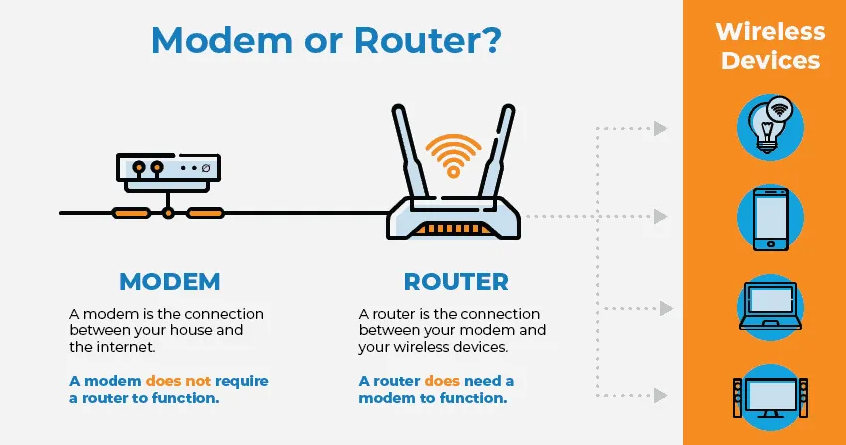

The Internet is a worldwide network of networks. Nearly every attack, defense and monitoring tool in cybersecurity depends on how data moves across it, so this lesson covers how you get online, the hardware involved, how devices are addressed, and the OSI model that people use to describe and troubleshoot networks.
Video: Code.org, "What is the Internet?" (How the Internet Works series).
The Internet is a global network of interconnected networks that lets people share information, communicate and use online services. It began in the 1960s as ARPANET, a US Department of Defense research project that connected a few universities and introduced packet switching: breaking data into small packets that travel separately and are put back together at the destination.
Devices on the Internet communicate using the TCP/IP family of protocols, which lets data cross many networks owned by different companies. No single organization owns the Internet; it runs on agreed standards and cooperation between providers, which is also why privacy and security are constant challenges.
You reach the Internet through an Internet Service Provider (ISP), which is your on-ramp to everyone else's networks. Common connection types:

Inside the office, every device has its own cable to the switch (a star). The router connects that LAN to the modem and, through it, to the Internet.
Which device decides how to send a packet from your home network out to a server on the Internet?
Routers move packets between different networks. Switches only deliver frames within one LAN.
Every device needs an address so data reaches the right place, the way a house needs a mailing address. There are two kinds:
00-09-5B-36-C2-93. Used to deliver data within the local network.IPv4 addresses are 32 bits, written as four numbers from 0 to 255 (for example 192.168.1.20). That allows about 4.3 billion addresses, which ran out. IPv6 addresses are 128 bits, written in hex (for example 2001:db8::7334), with enough addresses for every device imaginable.
| Kind of address | Range or example | What it means |
|---|---|---|
| Private | 10.0.0.0 to 10.255.255.255172.16.0.0 to 172.31.255.255192.168.0.0 to 192.168.255.255 | Used inside homes and offices. Not reachable from the Internet; the router shares one public address for all of them (NAT). |
| Public | Everything else (for example 8.8.8.8) | Globally unique and reachable on the Internet. Given out by ISPs. |
| APIPA (self-assigned) | 169.254.x.x | The device asked for an address and nobody answered. A sign that DHCP failed: check the cable, Wi-Fi or router. |
| Loopback | 127.0.0.1 (IPv6 ::1) | The device itself. Used to test the network software. |
255.255.255.0) tells a device which addresses are on its own network and which are elsewhere.www.example.com becomes an address your computer can reach. If names stop working but IP addresses still do, suspect DNS.A user says "the Internet is down". Their PC shows the IP address 169.254.37.12. What is the most likely cause?
169.254.x.x is a self-assigned (APIPA) address. The PC asked for an address and got no answer, so start with the cable, the Wi-Fi connection or the router.
Two protocols carry most traffic:
A port number tells the receiving device which service the data is for. Common ones to know:
| Port | Service | Port | Service |
|---|---|---|---|
| 20, 21 | FTP (file transfer) | 67, 68 | DHCP |
| 22 | SSH (secure remote command line) | 80 | HTTP (web) |
| 23 | Telnet (unencrypted, avoid) | 443 | HTTPS (secure web) |
| 25 | SMTP (sending email) | 445 | SMB (Windows file sharing) |
| 53 | DNS | 3389 | RDP (Remote Desktop) |
A video call can drop the odd packet without anyone noticing, but it must not lag. Which protocol suits it best?
UDP skips confirmations and resends, so it is faster. Resending a late video frame would only add lag.
The OSI (Open Systems Interconnection) model splits network communication into seven layers. Real networks use the simpler TCP/IP model, but everyone uses OSI layer numbers to describe where a device works or where a problem is ("that's a Layer 1 problem" means a cable or signal issue).
| Layer | Name | What it does | Examples |
|---|---|---|---|
| 7 | Application | The services programs use | HTTP, HTTPS, DNS, SMTP, FTP |
| 6 | Presentation | Formatting, encryption and compression | TLS encryption, JPEG |
| 5 | Session | Starting, keeping and ending conversations | Session setup for remote calls |
| 4 | Transport | Splitting data into segments; reliable (TCP) or fast (UDP) delivery; port numbers | TCP, UDP |
| 3 | Network | IP addresses and routing between networks | IP, ICMP (ping), routers |
| 2 | Data Link | MAC addresses and delivery within one network | Ethernet, Wi-Fi frames, switches |
| 1 | Physical | The signal itself: cables, connectors, radio, light | Cables, fibre, hubs, radio |
A common way to remember the order from Layer 1 up: Please Do Not Throw Sausage Pizza Away.
Practice: put the OSI layers in order, from Layer 1 (bottom) to Layer 7 (top). Use the arrows to move a layer, then check.
Video: Professor Messer, "Understanding the OSI Model – CompTIA Network+ N10-009 – 1.1" (from his Network+ course; the OSI model is the same for A+).
A switch forwards data using MAC addresses; a router forwards it using IP addresses. Which layers do they work at?
MAC addresses belong to Layer 2 (Data Link); IP addresses and routing belong to Layer 3 (Network).
In security, the layer tells you where an attack lands and where to defend: a flood of traffic can hit Layers 3 and 4, while a website attack such as SQL injection targets Layer 7.
ipconfig /all. For your active adapter, find the Physical Address (MAC), IPv4 Address, Subnet Mask, Default Gateway, DHCP Enabled and DNS Servers. Is your IPv4 address private? Which range?ping followed by your default gateway's address (for example ping 192.168.1.1). Replies mean your PC can reach the router.nslookup www.example.com to watch DNS turn a name into an IP address.tracert www.example.com to see each router your packets pass through on the way.Cybersecurity Curriculum | Level 1 Networking